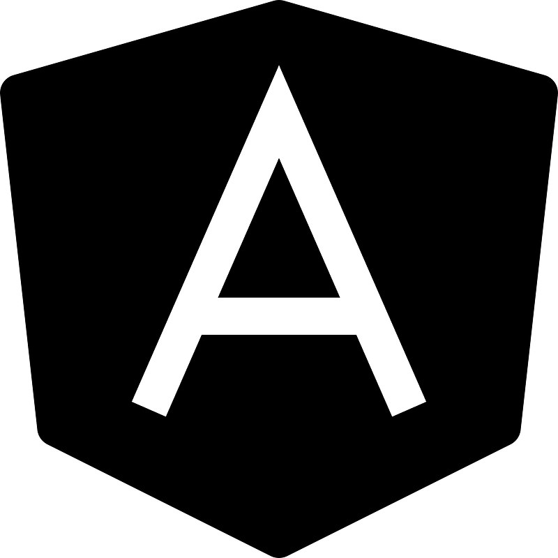
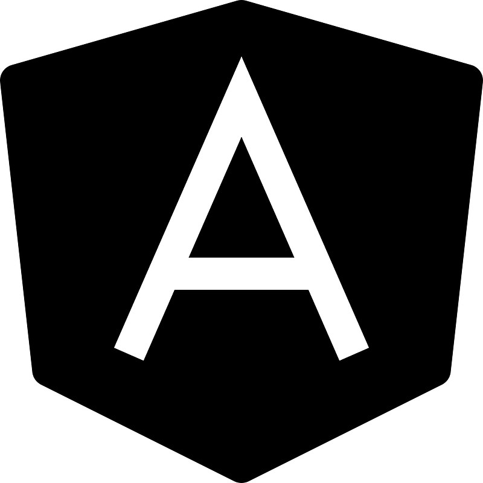
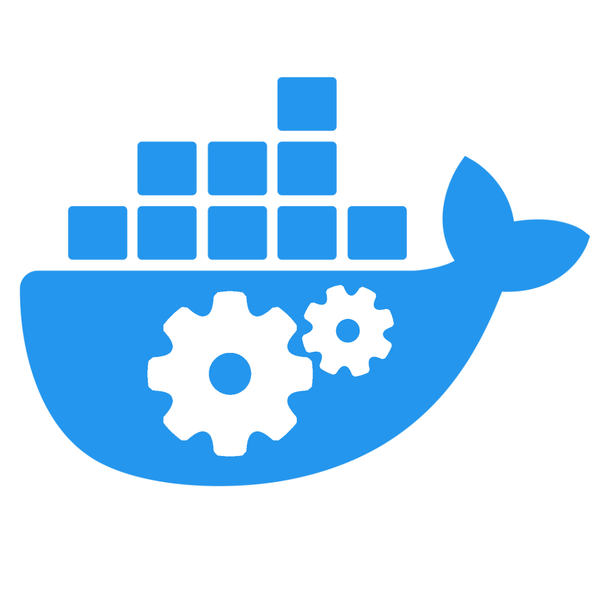
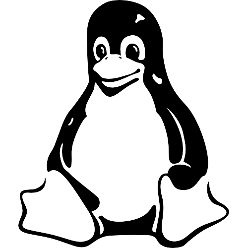
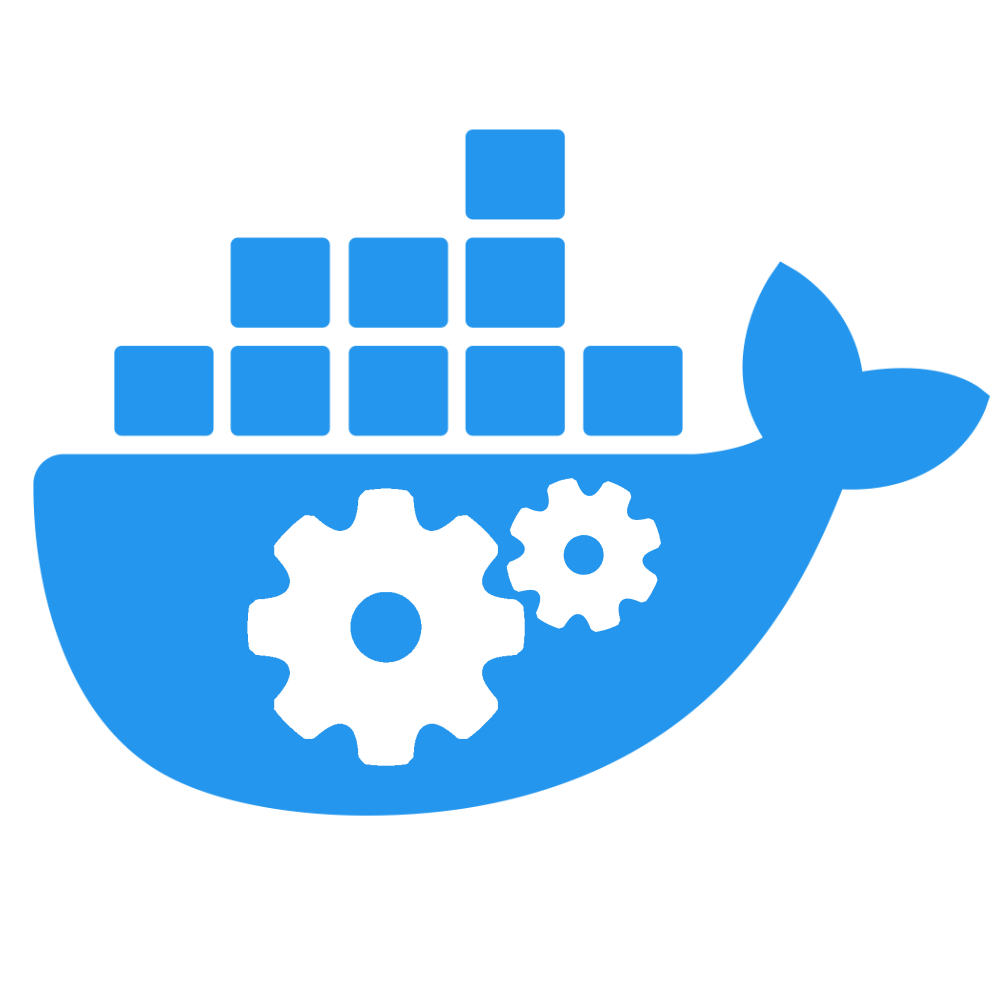
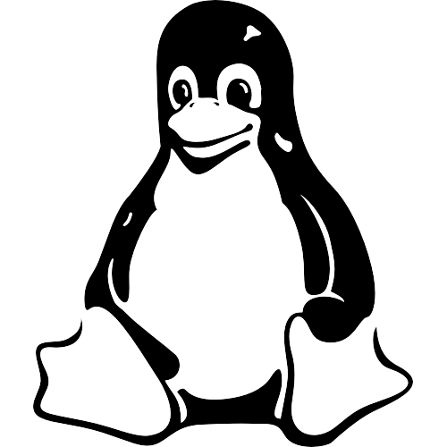
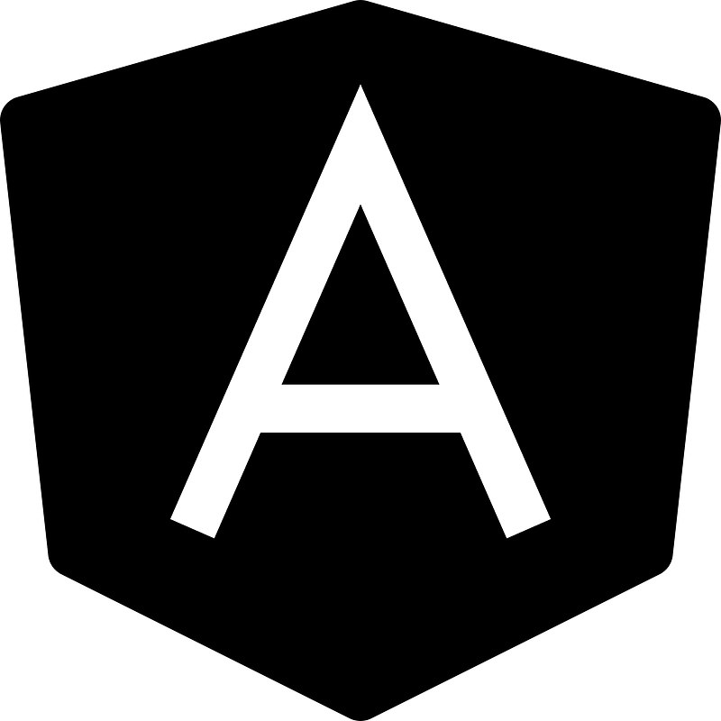
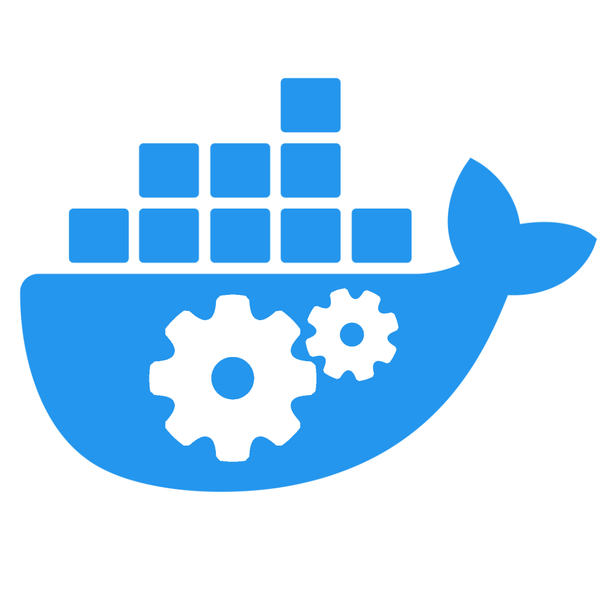
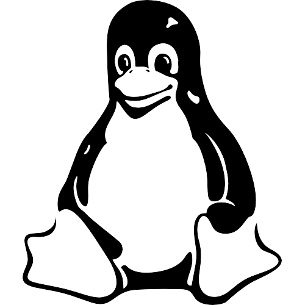

Skills
Here is a selection of the tools and technologies i utilise in my projects
 


 



As a backend developer and DevOps Engineer, I have experience maintaining an ERP system using microservices architecture.
Get my CVI specialize in backend and API developement. I mainly work with Java, Spring boot and C#, Asp.net core.
I strive for creating robust and scalable solutions. I leverage industry-standard tools, ranging from gitlab piplines/github actions to docker and kubernates.
For user interactivity. I have knowledge using Angular for web apps and Flutter for mobile applications.
2022 - Now
My role is to maintain, develop new features and deliver updates via docker
swarm, kubernates and linux installations.
2019
I developed an inventory management application for a client. That enhanced
multiple processes of the business based on simplicity, usability and efficiency.
2016 - 2019
I started Software Engineering. And covered topics such as algorithms and databases.
2021
A path designed to learn more about the small, modular, and independent deployable services.
2019 - 2021
I completed my studies focused on software architecture, and quality assurance.
Below is a summary of the side projects I worked on
Flutter
| UI/UX design
ASP.NET core
| SignalR | Real-time
JavaFX
| MySQL
TailwindCSS
| Github actions
Here is a selection of the tools and technologies i utilise in my projects


